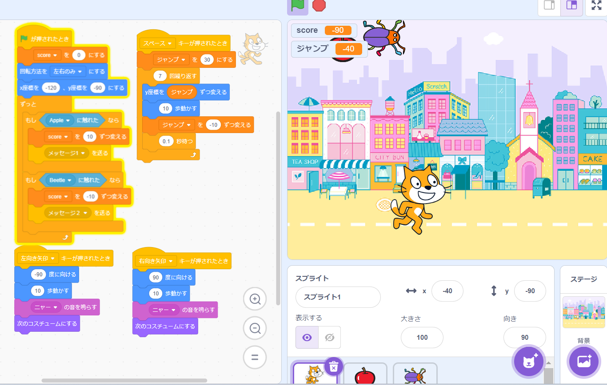

1週目のレポート ： 公大高専１年実習I-1
1b班36番 松浦晴香
第1週目
1-1 サイエンスアート
1.内容
スクラッチを使って線を書くプログラムを作成しました。
x座標0，y座標-72の位置に猫を置く
100歩移動→-200歩移動→80歩移動→13°回転→ペンの色を変える これを27回繰り返す
x座標0，y座標-36の位置に猫を置く
100歩移動→-200歩移動→80歩移動→20°回転→ペンの色を変える これを5回繰り返す
2.感想
プログラムの量が多くなってしまったので，繰り返しブロックなどを使って，もう少し短く作れたらよかったと思いました。
私一人ではきれいな図形をプログラムすることは難しいと思ったのでみんなで一緒に進めた図形に少し手を加えて二重丸みたいな図形をプログラムしました．
1-2 ゲーム

1.内容
猫を左右に動かして落ちてくるリンゴをキャッチするゲームを作成しました．
左向き矢印キー→左に10歩移動
右向き矢印キー→右に10歩移動
スペースキー→ジャンプ
とプログラムしました．
落下してくるリンゴに触れれば10ポイント，落下してくる虫に触れればｰ10ポイントとしました．
2.感想
変数ブロックを使うのが個人的に一番難しかったです．
本当は全部自分でプログラムしてみたかったけど難しくて思ったように猫を操作できなかったので，資料の最後に乗っているジャンプをプログラムしました．
虫が落ちてきてｰ10ポイントするのもリンゴと同じプログラムなので時間があればまた家でスクラッチを触ってみようと思います．
1-3 ホームページ作成
私のホームページ
1.内容
アカウントを作成する．
画像をアップロードする．
コードを書き換える．
2.感想
英語が苦手なので家でこのホームぺージの作成をするのが難しかったです．
でも，ほぼ指示通りに書き換えたり文章を書くだけだったのでコードにたどり着けば苦手意識を持っていたけど案外簡単でした．
家でホームページを作ってみたいと思っているのでしっかり授業を聞いて家でも勉強しようと思います．
各ページへのリンク
1週目のレポート
2週目のレポート
3週目のレポート
私のホームページ